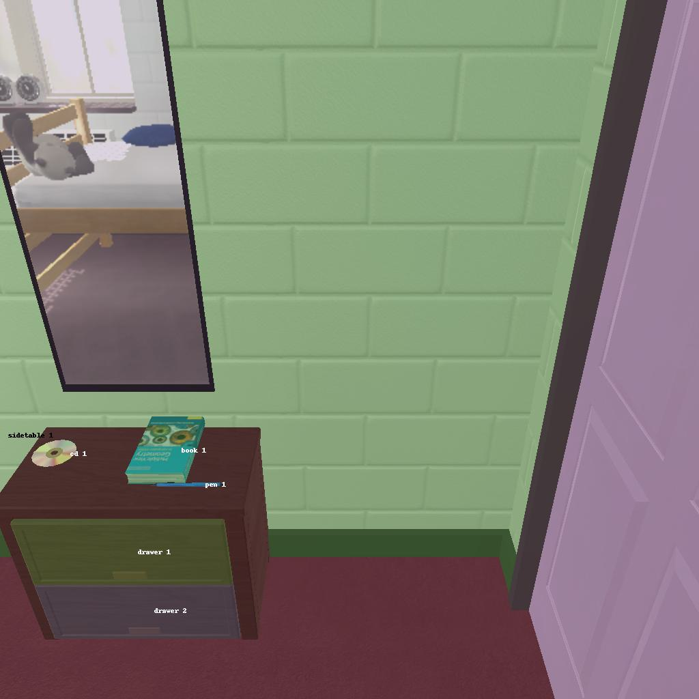

---------------------------------------------------------task: 8---------------------------------------------------------
--------------------------------------------------------------------------------------------------------------------------------------------------------------------
--------------------------------------------------------------------------------------------------------------------------------------------------------------------
Step:--------------------------------------------------------------------------8-------------------------------------------------------------------------------
----------------------------------------
VLM Prompt:
Image1:
**Instruction**
1. Analyze the provided image to identify all visible household objects, focusing on those relevant to the task description "put some laptop on desk."
2. Use the analysis of the image and the task hint "The agent must find an object of the desired type, pick it up, find the correct location to place it, and put it down there." to answer the question: what is the most reasonable action in the choices for the task description "put some laptop on desk"?
4. Decide and write the answer using the template: The answer is: (i): , where i is the real number. If there is no desired object in the image, search every place based on **Initial Observation** to find the object. And if no one is exactly correct, choose a similar answer.
**Initial Observation**
You are in the middle of a room. Looking quickly around you, you can see bed (1), garbagecan (1), desk (1), sidetable (1), drawer (1-5), laundryhamper (1)
**Answer Choices**
(1): go to bed 1
(2): go to garbagecan 1
(3): go to sidetable 1
(4): go to drawer 1
(5): go to laundryhamper 1
(6): go to drawer 3
(7): go to drawer 4
(8): go to drawer 5
(9): open drawer 2
(10): close drawer 2
(11): examine drawer 2
**Answer**
Let's think step by step by following the instructions.
----------------------------------------
----------------------------------------
Original Response:
Firstly, we need to identify all visible household objects in the image relevant to the task "put some laptop on desk." In the image, we can see a sidetable with a book and a pen on it and two drawers beneath it. There is also a mirror reflecting a bed, but no laptop is visible in the image.
According to the task hint, the agent must find an object of the desired type (a laptop), pick it up, find the correct location to place it (a desk), and put it down there. Based on the initial observation, there is a desk in the room, but it is not visible in the image provided.
Considering the answer choices and the task of putting a laptop on the desk, the most reasonable action would be to search every place based on the initial observation to find the object, which is the laptop.
Since the laptop is not visible in the image, it may be in a drawer or another location not shown in the image. The most reasonable action from the choices would be to start by examining or opening the drawers to find the laptop.
The answer is: (9): open drawer 2, as it is the only action related to interacting with a drawer where a laptop might be found. If the laptop is not in drawer 2, the agent should continue searching the other drawers or locations mentioned in the initial observation.
----------------------------------------
----------------------------------------
>>> Refine Original VLM Response and Get Pure Action: open drawer 2, as it is the only action related to interacting with a drawer where a laptop might be found
----------------------------------------
-----------------------------------------------------------------
Running time: 12.297677040100098 seconds
Total Money: 2.4047400000000008
-----------------------------------------------------------------
-----------------------------------------------------------------
Text Observation:Nothing happens.
-----------------------------------------------------------------
UNSUCCEED